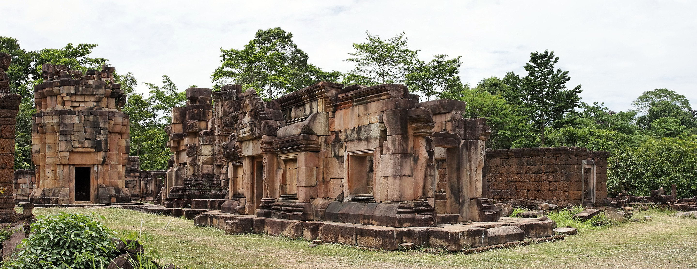

Oddar Meanchey (Khmer: ឧត្តរមានជ័យ 'Victorious North') is a province of Cambodia in the remote northwest. It borders the provinces of Banteay Meanchey to the west, Siem Reap to the south and Preah Vihear to the east. Its long northern boundary demarcates part of Cambodia's international border with Thailand. The capital is Samraong. The province was created on 27 April 1999, after being carved from the northern half of Siem Reap province and part of Banteay Meanchey. It existed as a province already from 1962 to 1970 under Norodom Sihanouk's Sangkum regime, but later became an administrative no-man's-land, with its status alternating between a province and a district under successive regimes.
